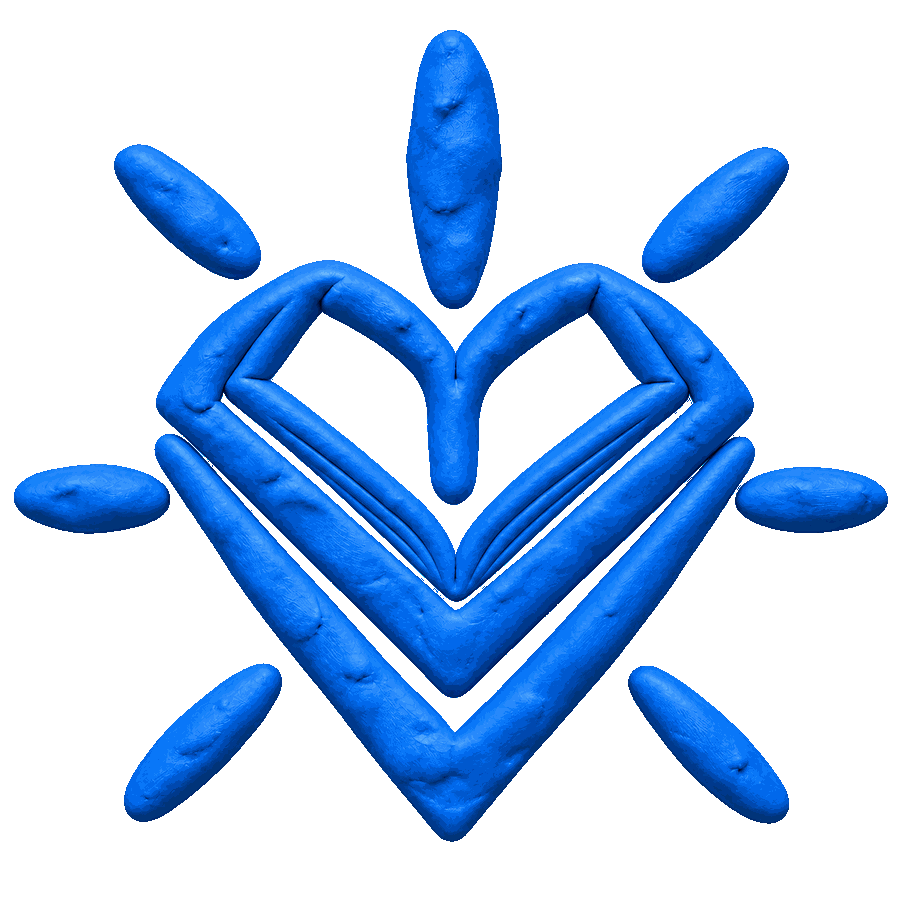
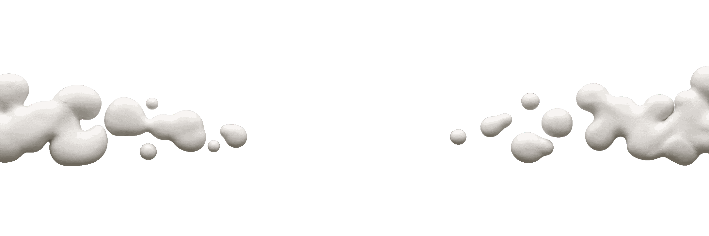

VERBA IN MOTION
VERBA IN MOTION
VERBA IN MOTION
VERBA IN MOTION


Verba Vitae Creative Lab
“In the Creative Lab, verse is no longer read in silence—it is sculpted, illuminated, and breathed into motion.”
con·flu·ence /ˈkɒn.flu.əns/ n. The flowing together of distinct artistic mediums—poetry, sculpture, and cinema—into a single current.
con·stel·la·tion /ˌkɒn.stəˈleɪ.ʃən/ n. A luminous gathering of creators and storytellers.
con·tour /ˈkɒn.tʊər/ n. The tactile outline of a sculpted figure or hand-drawn frame.
craft /krɑːft/ n. Skillful, patient manual creation; the tangible imprint of the artist's hand on clay and paper.
craft·work /ˈkrɑːft.wɜːk/ n. Physical artistry shaped by hand rather than synthetic automation.
cre·ate /kriˈeɪt/ v. To bring into existence out of imagination, verse, and raw matter.
cre·a·tion /kriˈeɪ.ʃən/ n. An original work of art or literature endowed with life and motion.
cre·a·tor /kriˈeɪ.tər/ n. One who shapes worlds from words, pigment, clay, and sound.
clay·ma·tion /kleɪˈmeɪ.ʃən/ n. Stop-motion animation using malleable clay figures sculpted and posed frame by frame.
co·alesce /ˌkoʊ.əˈles/ v. To unite diverse voices into a singular visual poem.
co·dex /ˈkoʊ.deks/ n. An ancient manuscript volume of preserved literature and illuminated verse.
col·lage /kəˈlɑːʒ/ n. An assemblage of layered textures, paper cutouts, and hand-inked frames.
col·or·ist /ˈkʌl.ər.ɪst/ n. A visual artist who evokes mood through shadow and tone.
com·po·si·tion /ˌkɒm.pəˈzɪʃ.ən/ n. The intentional arrangement of light, voice, and movement.
chia·ro·scu·ro /kiˌɑː.rəˈskjʊə.roʊ/ n. The dramatic interplay of light and deep shadow in visual storytelling.
cho·rus /ˈkɔː.rəs/ n. A collective spoken cadence resonating across an audience.
chron·i·cle /ˈkrɒn.ɪ.kəl/ n. A living record of human memory and poetic expression.
cin·e·ma /ˈsɪn.ə.mə/ n. The art of moving images; poetry projected through time and light.
cin·e·mat·ic /ˌsɪn.əˈmæt.ɪk/ adj. Possessing the atmospheric depth and emotional scale of film.
clay /kleɪ/ n. Earthy, tactile matter capable of holding the fingerprint of its sculptor.
bal·lad /ˈbæl.əd/ n. A narrative poem rich in rhythm, meant to be spoken and felt aloud.
be·spoke /bɪˈspoʊk/ adj. Crafted individually by hand for a singular artistic vision.
breath /breθ/ n. The vital pause and vocal warmth that animates spoken verse.
brush·work /ˈbrʌʃ.wɜːk/ n. The distinctive stroke and texture of an illustrator's hand.
ca·dence /ˈkeɪ.dəns/ n. The musical rise and fall of the voice in spoken literature.
can·vas /ˈkæn.vəs/ n. Any space where imagination takes visible form.
an·thol·o·gy /ænˈθɒl.ə.dʒi/ n. A curated collection of literary and visual works.
ap·er·ture /ˈæp.ər.tʃər/ n. The opening through which light enters to capture a single frame.
ar·ma·ture /ˈɑːr.mə.tʃər/ n. The hiddeninner skeleton supporting a sculpted stop-motion figure.
ar·ti·fact /ˈɑːr.tɪ.fækt/ n. A physical object shaped by human creativity and cultural memory.
ar·ti·san /ˈɑːr.tɪ.zən/ n. A maker skilled in tactile, expressive handcraft.
a·tel·ier /ˌæt.əlˈjeɪ/ n. A workshop or studio where artists collaborate on experimental works.
ae·ther /ˈiː.θər/ n. The luminous medium through which sound, light, and imagination travel.
al·che·my /ˈæl.kə.mi/ n. The seemingly magical transmutation of written words into living visual cinema.
al·le·go·ry /ˈæl.ɪ.ɡɔːr.i/ n. A story or visual metaphor revealing deeper human truth.
al·lit·er·a·tion /əˌlɪt.əˈreɪ.ʃən/ n. The rhythmic echoing of consonant sounds in verse.
am·bi·ence /ˈæm.bi.əns/ n. The atmospheric character and acoustic mood of a scene.
an·i·ma /ˈæn.ɪ.mə/ n. Breath, soul, or vital life bestowed upon still matter.
VERBA VITAE
ARCHIVE OF POETICS & MOTION
Verba in Motion is an internal creative lab inside Verba Vitae. We assemble writers, sculptors, illustrators, and sound artists to turn literature into cinematic shorts for modern digital culture.
Real clay, physical textures, hand-manipulated armatures, and stop-motion craft that give poetic verses palpable, organic weight.
Digital illustration, kinetic typography, and frame-by-frame visual metaphors translating complex emotions into vivid imagery.
Intimate voiceovers, custom atmospheric foley, ambient drones, and dynamic pacing that pull viewers into an evocative auditory landscape.
We are building an interdisciplinary team. No commercial production experience required—just artistic conviction, dedication, and craft.
Steers the overall creative vision, coordinates poem selection and storyboarding, and directs team workflow from initial concept to release.
Brings physical tactile characters and sets to life using modeling clay, miniature props, armatures, and stop-motion photography.
Creates digital or traditional illustrations, expressive character designs, kinetic typography, and motion overlays.
Weaves together all visual captures, audio tracks, custom foley effects, and color grades into a seamless short-form film.
Step into an ambitious creative endeavor. Join fellow writers, animators, and sound designers to build Verba Vitae's inaugural poetry in motion release.